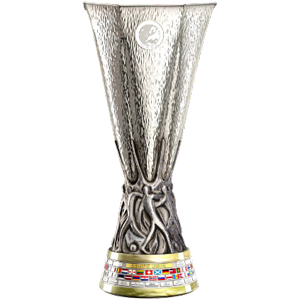
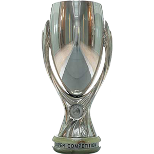
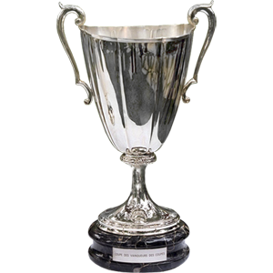

LEAGUE CUP

UEFA EUROPA LEAGUE

UEFA SUPER CUP

FIFA CLUB WORLD CUP

In the 1998-99 season, he was part of the United team that won the treble of the Premier League, FA Cup and Champions League, a unique feat in English football until Manchester City's 2022-23 season.[59] There had been speculation that the criticism that he had received after being sent off in the World Cup would lead to him leaving England.
See more
Jose Mourinho picked up his first United 'trophy' at the first attempt as goals from Jesse Lingard and Zlatan Ibrahimovic secured a 2-1 win over reigning league champions Leicester City in 2016.
See moreThe 2008-09 season was Manchester United's 17th season in the Premier League, and their 34th consecutive season in the top division of English football.
See more